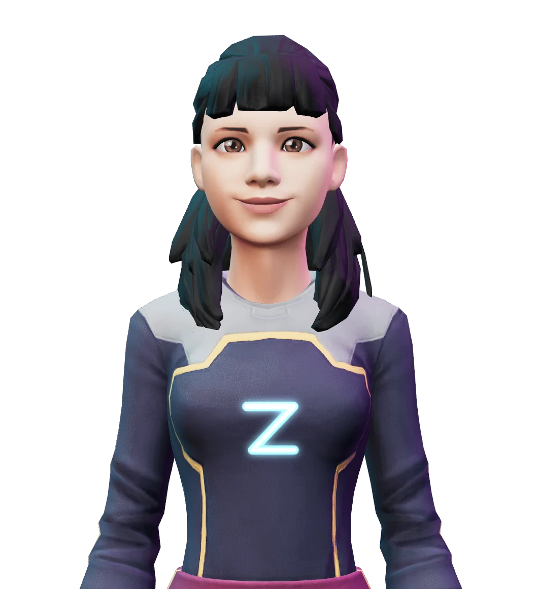
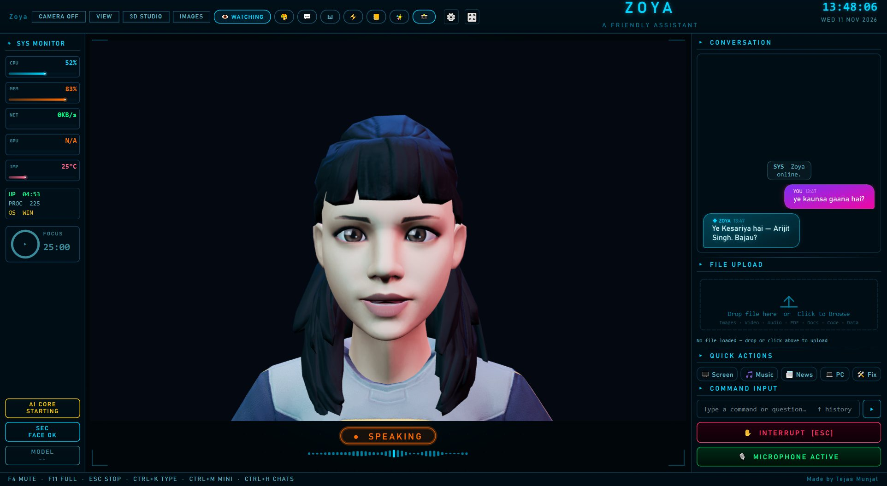

Talk to Zoya. She talks back, and gets it done.
A 3D AI companion for your Windows PC. Speak Hindi, English or Hinglish — Zoya answers out loud, works on your screen, plans your goals, remembers what matters, and runs your phone, TV and home.
- Windows 10 and 11, 64-bit
- Free for personal use
- Google sign-in, chats stay on your PC
- Updates herself, data kept
Zoya runs only on Windows 10 / 11 PCs. Open this page on your PC to download her.

Zoya updates herself
Install Zoya once. When version 5.0 or anything newer comes out, she downloads it, installs it while you're not using her and restarts on her own. You don't download anything again, and nothing you saved is lost.
- Your Gemini key, logins and passwords
- Memories, chats, notes and goals
- Face lock, voices and all settings
- Your files, downloads and pictures
- New version is outZoya checks this website every few hours.
- Downloads and checks itIt must carry Tejas Munjal's digital signature, or it's ignored.
- Waits for a quiet momentNever while you talk, type or a task is running.
- Installs and testsOnly Zoya's own code changes. If the test start fails, the old version comes back.
- Restarts and tells you“Main naye version pe aa gayi, aapka sab data safe hai.”
Prefer to choose yourself? Turn it off in Command Center → Autonomy, or just say “auto update band karo”. “Pichla version wapas lao” goes back one version.
One screen for everything she does
The real Zoya 4.0 window. She lip-syncs to her own voice, blinks, nods while she talks and shows how she feels — while your PC, your chat and your day sit around her.
Real lip-sync, expressions, a speech bubble and a voice waveform from the actual audio.
Every reply carries Zoya's small portrait; type, talk or drop files in.
CPU, RAM, network, GPU and temperature with live graphs, uptime and a focus timer.
A greeting, live weather for your city, PC health and your next reminder at a glance.
Screen, Music, News, PC, Fix and Home — one tap each.
Say or type anything, with suggested commands and ↑ history.
Zoya 2.1 and Zoya 4.0, side by side
Both are real screenshots of the app on Windows. Drag the handle to see how far she has come.

Zoya 2.1 Zoya 4.0Zoya 2.1
- A 3D head that filled the middle of the screen
- System monitor as plain numbers and thin bars
- Chat bubbles without Zoya's picture
- A row of small emoji buttons along the top
- Speech shown only as a status pill and a waveform
- File upload, quick actions and buttons stacked in one column
Zoya 4.0
- A full-body 3D Zoya with lip-sync, expressions, a speech bubble and a holo globe
- Monitor cards with live graphs, uptime and a focus timer
- Every reply carries Zoya's small portrait
- Clear navigation with icons and a Command Center of 11 tabs
- 30 voices and an Indian English or Hindi accent you choose, with her words in a speech bubble
- Today card with live weather, quick tiles and a command bar with suggestions
New in 4.0
The biggest Zoya yet. She now has a body, a voice with the right accent, and an operating layer of her own — goals, agents, a knowledge base, a sandbox and a governor that keeps her in check.
Updates herself
Install once; every new version arrives by itself.
4 new- Automatic updatesNew versions download in the background and install when Zoya is free. No new setup, no question.
Kya naya version aaya?
- Your data never goesKeys, logins, memory, face lock, chats and settings are never touched. Changed files are backed up first.
- Signed and testedOnly updates signed by Tejas Munjal are installed. A test start runs first; if it fails, the old version comes back.
- Your choiceTurn it off in Command Center → Autonomy, or go back one version any time.
Pichla version wapas lao
Your PC and your apps
She hears every message, remembers what your PC did and fixes what breaks.
7 new- Every message, within secondsInstagram DMs even with the window closed (log in once), and any app's Windows notification — WhatsApp, Telegram, Outlook, Teams.
Riya ka Insta pe message aaya
- Gets to know your appsLearns who messages you where, asks about new people and which alerts matter.
Mere apps analyse karo
- Zoya Black BoxA flight recorder for your PC: CPU spikes and which program, crashes, shutdowns, file changes and everything Zoya did — with a time-travel graph and recovery buttons.
Kal raat PC mein kya hua?
- Cleans your PCTemp files, crash dumps and old caches go by themselves when you're away; the Recycle Bin only after a yes.
- Laptop troubleshooterChecks internet, DNS, blocks, proxy, VPN and what the site says, asks what you see, then fixes it.
Insta nahi khul raha
- Devices & apps windowOne card each for TV, lights, phones, washer/AC, Instagram, WhatsApp and Gmail — connected or not, at a glance.
- Sign in with GoogleYour account icon sits top right with Switch account and Sign out. Only your email, name, version, Windows and city are kept.
Watches, builds and creates
She keeps up with your screen and makes things for you — and for herself.
5 new- Screen watchEvery 20 seconds she understands what's on screen and speaks up only when something is wrong. Never private windows; no screenshots kept.
Aage kya karu?
- Builds whole appsWrites the app, tests it, fixes what fails and shows every step live in Build Studio — then runs it for you.
Minecraft server tool bana do
- Builds tools for herselfMissing an ability? She writes a new tool, checks it, tests it in the sandbox and installs it only after your yes.
- Animated videosExplainers, intros, promos and wishes from 5 to 120 seconds, saved as MP4.
30 second ka intro video bana
- Knows your voice betterNever switches away from you on one unclear sentence; "main hi hoon" corrects her on the spot.
Zoya, in 3D
A face you can talk to, in a layout built around her.
6 new- A real 3D ZoyaLip-sync to her own voice, blinking, breathing, nods, and smile, focus, concern or surprise from what she says. Drag to turn her.
- A new home screenSystem monitor, 3D stage, conversation, Today card, quick actions and command input, as designed.
- Her picture in the chatZoya's messages carry her small round portrait, like a real conversation.
- Natural Indian accentHindi words said the Hindi way, clear Indian English and smooth Hinglish switching.
Accent: Indian English + Hindi
- 30 voices, a warmer defaultPick any of the 30 Gemini voices in Command Center → Voice.
- Real weatherTemperature and forecast on the Today card and by voice — no browser opening.
Kal baarish hogi?
Her own operating layer
Zoya plans, checks herself, learns from mistakes and stays inside the limits you set.
17 new- Goal GraphLong-term goals with milestones, dependencies and progress — and the next step when you ask.
Agla kya karu?
- Outcome-based intelligenceSay the result you want; Zoya turns it into checks and tracks it until it's true.
PC fast rahe exam se pehle
- Persistent project agentsOne helper per project with its own notes, files, goals, progress and work log.
ARES ke liye agent banao
- Tasks continue after a restartMulti-step jobs save a checkpoint after every step and resume where they stopped.
- Personal Knowledge CompilerFolders you allow and your saved memories become a searchable knowledge base that updates itself.
Meri notes me motor driver kaunsa tha?
- Cross-application reasoningOne answer from Excel, PDF, Word, browser tabs and open apps together, with sources.
Ye quote meri budget sheet me fit hai?
- AI Negotiation EnginePlanner, Engineer, Skeptic and Guardian agents propose and critique; a judge picks the best-justified way and says why.
- Multi-agent collaboration and verificationAgents split a job between them, and independent verifiers check the result before you rely on it.
- Zoya SandboxGenerated code runs first with no network, no programs and no file changes outside a test folder.
- Automation rehearsalSimulate a workflow before it runs: what each step would do, its risk, and anything missing.
- Workflow DNAEvery automation gets versions, diffs, rollback, run history, tests and reusable components.
- Self-improving workflowsZoya spots steps that keep failing or repeat and applies the safe fixes as a new version.
- Failure IntelligenceErrors are remembered with what fixed them; integrations heal themselves with the fix that worked before.
- Autonomy GovernorCautious, balanced or trusted; hourly budgets, a spend limit and an always-ask list. High risk always asks you.
- AI activity timelineEvery action, decision, result and approval recorded on your PC — searchable and exportable.
Aaj tumne kya kya kiya?
- Zoya Dream ModeAt night she reviews goals, tasks, errors and workflows, and has suggestions ready in the morning.
- Anticipatory computingLearns your routine and offers what you usually need around now — confident ones only.
Memory and brain
She remembers people, projects and preferences — and you can see and edit all of it.
4 new- Long-term memory and knowledge graphPreferences, people, projects with progress and deadlines, linked together. Memory Manager to edit or delete.
Yaad rakhna, Rahul mera college friend hai
- Context recallRelated memories come back by themselves while you talk, and per-app notes when you switch apps.
- Choose the brainGemini online, Ollama offline, or any OpenAI-compatible server for tasks and reports.
- Sources and confidenceAnswers from the web say where they came from and how sure she is.
Tasks and your PC
Bigger jobs done in the background, with your OK before anything risky.
6 new- Tasks she finishes herselfResearch, comparisons, Word reports and PowerPoint decks — planned, checked and recovered by herself.
30k ke andar best camera phones dhundo
- Drive-to-drive copy by voiceChecks space, never overwrites, verifies sizes, runs big copies in the background, and can undo.
Ye file D drive se E drive me copy karo
- Find files by describing themNo file name needed — documents, photos and songs by what they are or when.
Wo PDF jisme electricity bill tha
- Organise any folderSorted by what the files are, with a preview first and undo after.
- PC Health DoctorWhy the PC is slow, heavy apps, startup programs, temp files and disk space.
PC slow kyu hai?
- Workspaces and Automation StudioOpen your apps, sites and folders together; drag-and-drop automations with triggers.
Coding setup kholo
Voice and home
She knows her name, your voice, your music and your house.
7 new- “Hey Zoya”Wake her with her own name, offline (Full setup).
- Song ID in about 5 secondsShe stops listening the moment she knows the song.
Ye kaunsa gaana hai?
- Learns your voice by herselfAnd family voice profiles with their own permissions.
Ye Mummy hain, inki awaaz yaad rakho
- Personalities and modesFriendly, professional, concise, humorous, warm; study, coding, gaming, work and relaxed modes.
- Device discovery and scenesGoogle Cast, WiZ, UPnP TVs and Home Assistant; movie, sleep, good morning and leaving home.
Movie scene on karo
- Proactive, with quiet hoursMorning briefing, deadline reminders and PC alerts — silent at night, each one switchable.
- Custom voice (beta)Your own voice for alerts, only with consent, encrypted and deletable.
Hear her
Real clips from Zoya's welcome screen. In 4.0 she speaks with a natural Indian accent in Hindi, English and Hinglish, and you can choose from 30 voices.
Zoya calls elders aunty and uncle, never reads your OTP aloud, and asks before anything that can't be undone.
Inside Zoya
Real screens from the app. Tap one to see it bigger.
Compare versions
Pick a topic to see what each release can do. Updating keeps your settings, logins and memory.
✓ included, ✕ not in that version. Full notes for every release are in the PDFs below.
Download Zoya 4.0
Pick one. You can run the Full setup later to add the offline parts.
Full Recommended
Works even when the internet is down.
- Everything in Standard
- Offline brain (Ollama, sized to your RAM)
- Offline speech, “Hey Zoya”, voice ID and FFmpeg
Standard
Smaller download, needs internet.
- All of Zoya's features, including the 3D Zoya
- Python and every package, installed for you
- Gemini brain (online)
Already have Zoya 4.0? If you installed it before 11 November 2026, install this download once over it — your settings, logins, memory and chats stay. From then on Zoya updates herself and you never download again.
Windows only. If Windows shows “Windows protected your PC”, click More info, then Run anyway — the installer is new, so Windows hasn't seen it often yet.
Every version
Newest first. Each PDF lists everything in that version, ready to share.
| Version | Released | What's new | Standard | Full | Documentation |
|---|
Set up
- DownloadChoose Full or Standard above and save the .exe.
- Run the setupNo admin rights needed. It installs Python, Zoya's packages and, with Full, the offline parts. 20–60 minutes, depending on your internet.
- Meet ZoyaShe asks your name and takes your free Gemini API key.
- Lock it to youAdd your face and a password. Then say “Hey Zoya” or hold Ctrl+Space and talk.
Requirements
| Windows | 10 or 11, 64-bit |
|---|---|
| RAM | 4 GB Standard, 8 GB Full (16 GB recommended) |
| Free space | 6 GB Standard, 11 GB Full |
| Processor | 4 cores (Core i3 / Ryzen 3) or better |
| Graphics | Any GPU from the last 8 years for the 3D Zoya; older PCs get a still 3D picture |
| Internet | Needed for Gemini; Full works offline too |
| Mic and speakers | Needed; headphones reduce echo |
| Webcam | Optional, for face login |
Privacy, plainly
Stays on your PC
Chat history, memory, goals, knowledge base, activity timeline, face data, logins and your API key. Logins and keys are encrypted with Windows (DPAPI).
Sent to Google Gemini
Your voice while you talk to Zoya, and the screen parts or files she needs for a task you ask about. You use your own Gemini key.
Your Zoya account
You sign in once with Google. Zoya's user list keeps only your email, name, Zoya version, Windows version, city / country and when you signed in — so we know who uses Zoya and which version. Never your chats, memory, files, screen, voice, face, passwords or keys. Google's own page handles the sign-in; Zoya never sees your Google password.
You stay in control
The Autonomy Governor and voice lock decide what may run. Zoya asks before send, pay, post, move or delete, and Esc stops her.
Questions
Is Zoya free?
Yes, free for personal use (CC BY-NC 4.0). She uses your own Google Gemini API key, which you can get free from Google AI Studio; heavy use may need a paid Gemini plan.
Will the 3D Zoya run on my PC?
On almost any PC from the last few years. If the graphics can't run 3D, Zoya shows a still 3D picture of herself and everything else works the same. You can also switch to the lighter look in Command Center → Voice → Avatar.
Something isn't working. How do I get help?
Email zoyasupport1@gmail.com with your Zoya version (top right of the Command Center), what you were doing and a screenshot of the problem. Never send your Gemini key, passwords or OTPs.
Why do I sign in with Google? What does it share?
Sign-in keeps one user list so updates and support reach real users. It stores only your email, name, Zoya version, Windows version, city and country, and your first and last sign-in. Your chats, memories, notes, files, screen, voice, face data, passwords and API keys stay on your PC and are never uploaded. Want your entry removed? Email zoyasupport1@gmail.com from the address you signed in with.
Will an automatic update delete my data?
No. An update replaces only Zoya's own program files. Your Gemini key, logins, memories, chats, notes, goals, face lock, voices and settings stay exactly as they are, and every file that changes is backed up first. If the new version fails its test start, Zoya puts the old one back by herself.
Can Zoya do things on her own?
Only inside the limits you set in the Autonomy Governor. Low-risk work can run by itself; medium risk only when she is confident; anything that sends, pays, posts, moves or deletes always waits for your OK. Every action is in the activity timeline.
What does Dream Mode look at?
Your goals, project progress, unfinished tasks, recurring errors, workflows, outcomes and the knowledge base. Your memories only if you allow it. Nothing is sent anywhere and nothing is changed — she only prepares suggestions.
Windows says “Windows protected your PC”. Is it safe?
New installers from independent developers show this until enough people have used them. Click More info, then Run anyway. Download Zoya only from this page; the SHA-256 of each file is shown above.
Why does setup take so long?
It downloads Python and Zoya's packages (1.5–2 GB), and with Full also the offline brain and speech models (5–6 GB). Anything already on your PC is reused.
Which TVs and appliances work?
Android TV / Google TV and Samsung TV; Philips WiZ and Tuya / Smart Life lights; LG ThinQ and Samsung SmartThings washers and ACs, or any brand through Home Assistant.
Is there a Mac, Linux or phone version?
No. Zoya runs on Windows 10 and 11 (64-bit). Your Android phone can connect to her, but Zoya runs on the PC.